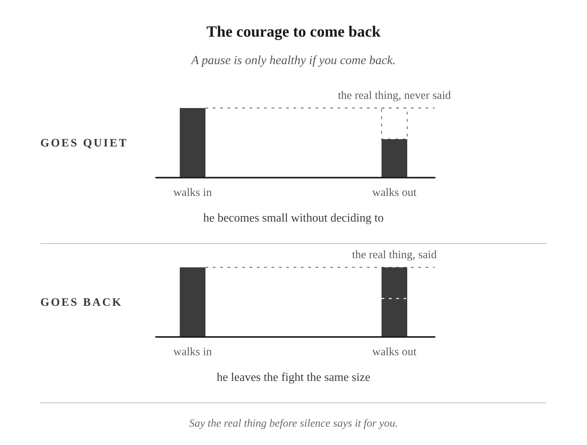

You’re already inside a real fight, and everything from the last four chapters gets used at once. The only question left is what kind of man you are at the end of it.
She’s low, or you are. The temperature in the room shifts before the first word gets said. You feel it the way you feel weather. Then something gets said. Maybe it’s small, or maybe it touches something already tender, and the gap opens.
If you’re not governing it, the Four D’s are already running before you’ve decided to run them. You go on the defense. You deny what she’s said. You downplay: I did pretty well there, why are you making this bigger than it needs to be? Then you deflect, pointing out something she hasn’t done. Her original concern gets buried under a counter-prosecution. She came to say one thing and ends up answering for something else. Neither of you wins. Both of you end up slightly smaller than when you started.
That’s the arc, and you’ve both run it before.
This is the last chapter of Part I because it’s where all five chapters apply at once. You bring the mood you picked up before the conversation began and the gap that opened when the trigger hit. You bring the Four D’s that fired automatically and the anger underneath all of it. What’s left is what you do with the rest.
The Four D’s fire hardest for criticism that hits something already there. Generic criticism doesn’t land the same way.
Think about the word she uses that lands harder than its content warrants, the one that touches something you’ve been carrying quietly. You know you’re not objectively what she said. But the accusation lands on something specific: a place where you don’t feel seen for what you actually do, where the judgment feels like it’s missing the full picture.
You know this in your body before you know it in your head. Defense. Deny. Downplay. Deflect. Her original complaint gets prosecuted from the other direction, until you’re both defending and the thing that needed to be said is gone.
An apology may end the fight. The hurt that set it off still needs a conversation.
The reaction out of proportion to the incident is usually telling you where the wound is. It points less at what she did wrong than at what’s already tender in you. That’s worth sitting with.
The Four D’s are one way to become small, and there are others.
Cold anger, from the last chapter, is one: you go quiet because you want her to know, not because you’re cooling down. It’s two days of distance between you that neither of you names. The sulk has no stated charge, so she has to work it out alone.
Another is winning the argument and losing the relationship. You’re right, she’s wrong, the point is scored, and the marriage is a little colder for it.
None of this was decided. You absorbed it, the same way you absorbed the rest. That leaves the question in this chapter’s title. Are you leaving the fight the same size you were when it started?
Most fights are small.
Marcus put a name on the practice: the view from above. “Look down from above on the countless herds of men and their countless solemnities, and the infinitely varied voyagings in storms and calms, and the differences among those who are born, who live together, and die.” (Meditations 9.30, Long trans.)
In a fight, the same practice means zooming out until the thing is at its actual scale. You’re fighting about what time to get up in the morning, not world peace. You’re fighting about a messy room, a tone of voice, something that didn’t get done. From altitude, most of what feels urgent in the moment becomes almost nothing.
Couples who make it fifty years don’t avoid fighting. What long marriages seem to learn is that most small fights don’t need a verdict. Think of the fight about the dishes, the cold drive home, the two-day silence after something someone said on a Thursday. You can’t remember most of it, and it didn’t need to be resolved. It needed grace and a little time.
That’s one outcome: you let it go. You’re making a genuine decision that this belongs with the things that don’t need a ruling, and you aren’t pushing anything down.
But some things won’t shrink from altitude. When you zoom out and the thing is still big, that’s the signal. A fight ends up in one of four places. You let it go. You fight hard, both take damage, and then time passes and you call it resolved without the real conversation. You fight hard, both take damage, and someone has the courage to come back. Or you communicate, either in the moment or after you’ve cooled. It’s common never to come back to it later. That’s how the unresolved hurts accumulate.
The Stoics called it parrhesia: frank speech. Seneca’s version of it, from a letter to his friend Lucilius: “I prefer that my letters should be just what my conversation would be if you and I were sitting in one another’s company or taking walks together,—spontaneous and easy; for my letters have nothing strained or artificial about them.” (Epistulae Morales, Letter 75, Gummere trans.) He was writing about letters, but the principle is the same in a fight. You say the true thing directly, without arranging it for effect or managing what comes back.
When you come back to the unresolved conversation, wait until things are calm. Ask if you can talk. Say what’s true for you, not as a prosecution, but because you don’t want to be the man who stores things instead of saying them. When nothing ever gets addressed, the air between you leaks into everything else in the house. The kids feel it too.
Say the true thing. Then let it land however it lands.
Her response is hers. Whether she hears it the way you meant it, whether it produces the conversation you hoped for: all of that is a preferred indifferent. It’s something you’d like, but you don’t control it. What you govern is your own part in the conversation.
Not everything resolves logically. She may tell you this directly, and she’ll be right. You have a framework built on reason. Marriage doesn’t run purely on reason, and she won’t always reach an answer the way you do. Some disagreements won’t resolve cleanly. Some conversations will need to be had more than once.
The courage to communicate includes the courage to leave something unresolved and come back to it again. You do it because you’re committed to the conversation however long it takes, and the win isn’t the point.
Part I asked whether you can keep flowing when the rocks hit. Part II asks whether you can carry the weight over time, steadily, without resentment and without disappearing. Everything you’ve built here is what makes it possible.

Putting into Practice
Mechanism: The courage to come back
The idea in one sentence: The fight ends before the real thing gets said. That’s not resolution. That’s how a man becomes small without deciding to.
The default is to call a fight over before the real conversation happens: the Four D’s fire, the original concern gets buried, time passes, and both people call it resolved. Parrhesia, frank speech, is the Stoic practice of coming back to the unresolved thing, saying what’s true without managing the outcome, and releasing her response as a preferred indifferent.
Lesson: Parrhesia: the Stoic discipline of speaking plainly, without dressing it up or managing how it lands. Whether she receives it the way you hoped is a preferred indifferent: something to want, not something you get to control.
Challenge: Calling a fight “over” once it goes quiet, without the real thing ever actually getting said, isn’t resolution. It’s deferred conflict, with interest.